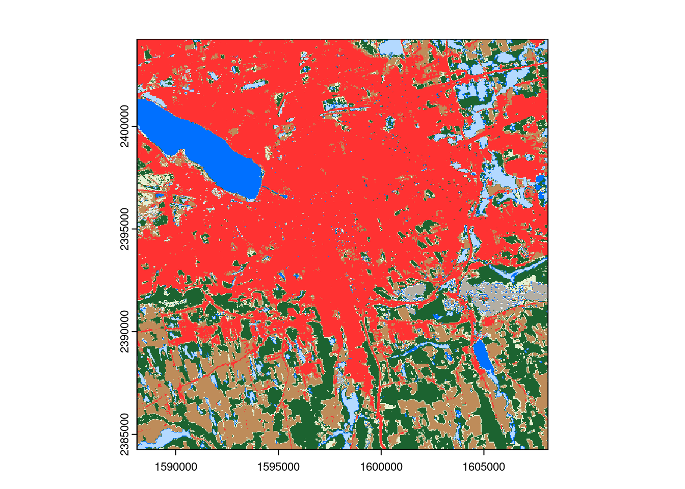
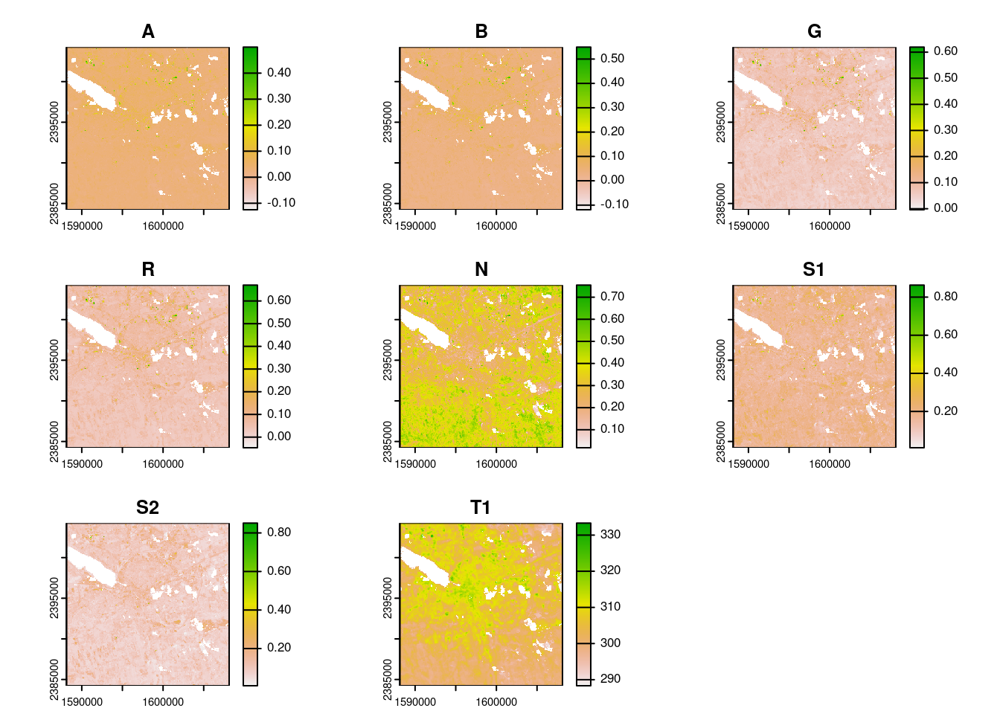
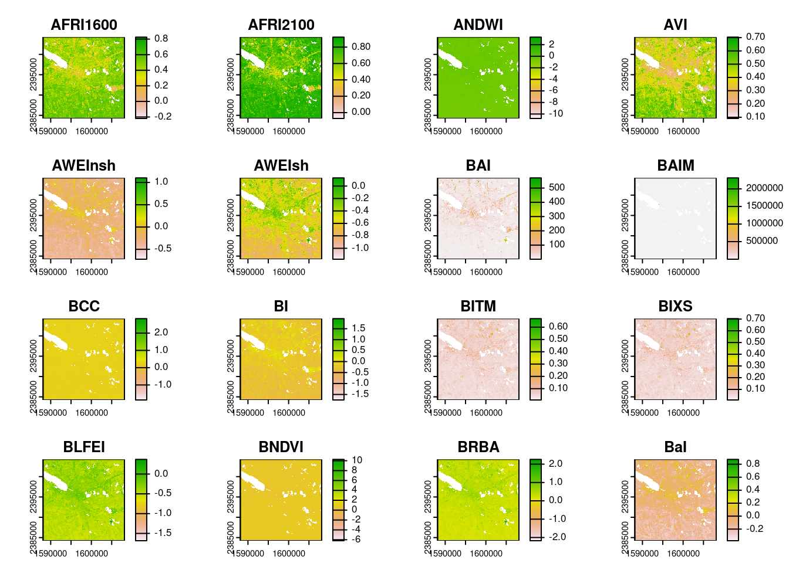
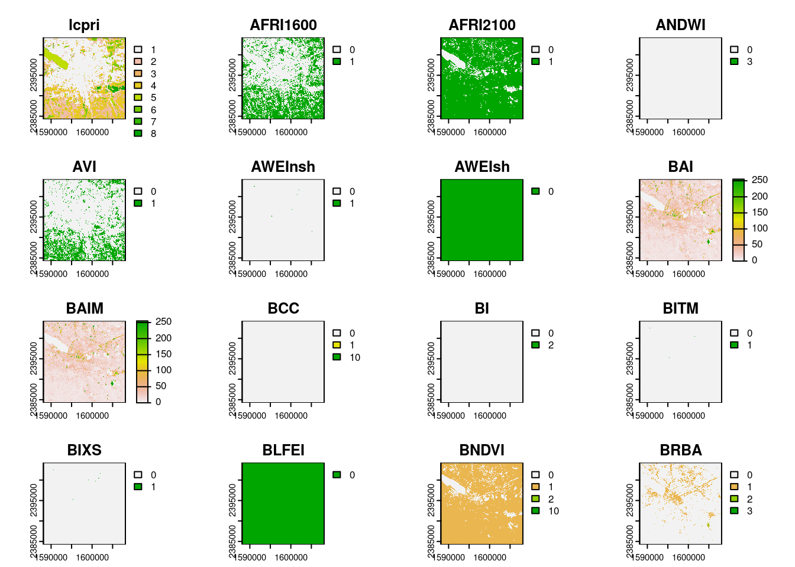
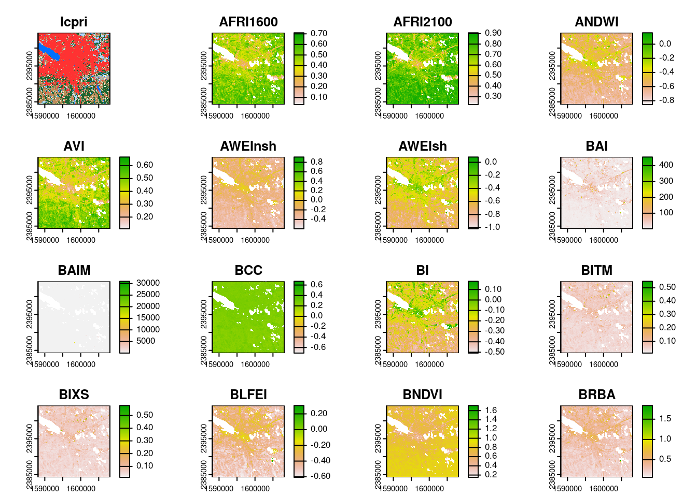

aoi <- sf::st_point(c(-76.1376841, 43.0351335))
aoi <- sf::st_set_crs(sf::st_sfc(aoi), 4326)
aoi <- sf::st_buffer(sf::st_transform(aoi, 5070), 10000)I’m thrilled to announce that version 0.1.0 of rsi, a new package for handling common spatial ML data pre-processing tasks, is now officially on CRAN. rsi helps you download1 data from STAC APIs, calculate spectral indices from that data (with an interface to the Awesome Spectral Indices project), and efficiently stack rasters together to help build predictor bricks.
You can install it from CRAN via:
install.packages("rsi")rsi is motivated by my own work doing landscape-level natural resources mapping, both with Permian Global Research (who have been incredibly supportive of me open-sourcing this project that originated from my contract work) and with CAFRI (see for instance our newest Landsat-based forest carbon maps). Most of these projects have a pretty consistent data-processing workflow: I need to go get data from somewhere, calculate indices and other predictors against it, and then glue all those derived products together into a predictor brick I can actually extract my predictor values from. rsi handles every step of that process and does so efficiently, letting you spend less time on your pre-processing and more time on your actual models.
I’ve written about rsi a few times before, including about how rsi does sandboxing when running code from untrusted sources and how to make the most of the get_stac_data() family of functions. This post is going to provide a more holistic introduction to rsi,2 focusing on the main functions in the package and how you might use them as part of your pre-processing workflows.
Downloading data from STAC APIs
Perhaps the most useful piece of rsi3 is the get_stac_data() family of functions, which help you download data from STAC APIs. As an example, let’s say that we’ve used sf to define some area of interest that we want to download data for:
If we wanted to get land cover data for this area from 2021, using the USGS LCMAP product from Planetary Computer, we could use the get_stac_data() function from rsi like so:
library(rsi)
future::plan("multisession")
lcpri <- get_stac_data(
aoi,
start_date = "2021-01-01", # Making sure we only grab data from 2021
end_date = "2021-12-31",
asset_names = "lcpri", # The name of the primary land cover product in LCMAP
stac_source = "https://planetarycomputer.microsoft.com/api/stac/v1/",
collection = "usgs-lcmap-conus-v13", # The name of LCMAP on Planetary Computer
output_filename = tempfile(fileext = ".tif"),
)
terra::plot(terra::rast(lcpri))
If our data is split across multiple tiles, get_stac_data() will automatically merge them into a single composite output. There’s an article on the rsi website that gives a brief overview of the STAC family of standards, and how you can use the arguments to get_stac_data() to flexibly control exactly what you’re downloading and how.
In addition to get_stac_data(), rsi also provides a number of higher-level functions for interacting with popular satellite imagery data sources – specifically, Landsat, Sentinel-2, and Sentinel-1 (including the Sentinel-1 RTC product). In addition to downloading and merging tiles, these functions will also handle creating composite rasters from multiple separate images, masking out clouds and other low-quality data, and (where possible) automatically rescaling your data using offsets and scaling factors defined in the STAC metadata
landsat <- get_landsat_imagery(
aoi,
start_date = "2021-06-01",
end_date = "2021-08-31",
output_filename = tempfile(fileext = ".tif")
)
terra::plot(terra::rast(landsat))
Note that the inputs to these functions are normal R objects, and the outputs are the file paths your data was saved to. A key difference of rsi from other packages for downloading data from STAC endpoints is that rsi doesn’t introduce a new data model,4 and instead is focused on getting data onto your local filesystem as quickly as possible. Ideally, you’ll be able to let rsi handle all the “cloud-native geospatial” stuff for you, and then use the outputs with whatever tools you’re most comfortable with.5
For more information on the get_stac_data() family of functions, check out the corresponding article on the rsi website!
Calculate spectral indices
Most other functions in rsi also use the approach of accepting normal R objects as function inputs, and returning file paths to raster outputs. For instance, rsi provides a function, calculate_indices(), which can be used to calculate spectral indices from the band values of an input raster.
By default, this function is designed to work with spectral indices from the (awesome) Awesome Spectral Indices project. In fact, the spectral_indices() function in rsi will give you a processed tibble containing the full list of indices from that project:
spectral_indices()# A tibble: 231 × 9
application_domain bands contributor date_of_addition formula long_name
<chr> <list> <chr> <chr> <chr> <chr>
1 vegetation <chr [2]> https://gith… 2021-11-17 (N - 0… Aerosol …
2 vegetation <chr [2]> https://gith… 2021-11-17 (N - 0… Aerosol …
3 water <chr [6]> https://gith… 2022-09-22 (B + G… Augmente…
4 vegetation <chr [2]> https://gith… 2021-09-20 (1 / G… Anthocya…
5 vegetation <chr [3]> https://gith… 2022-04-08 N * ((… Anthocya…
6 vegetation <chr [4]> https://gith… 2021-05-11 (N - (… Atmosphe…
7 vegetation <chr [4]> https://gith… 2021-05-14 sla * … Adjusted…
8 vegetation <chr [2]> https://gith… 2022-04-08 (N * (… Advanced…
9 water <chr [4]> https://gith… 2021-09-18 4.0 * … Automate…
10 water <chr [5]> https://gith… 2021-09-18 B + 2.… Automate…
# ℹ 221 more rows
# ℹ 3 more variables: platforms <list>, reference <chr>, short_name <chr>The first time you run spectral_indices() will attempt to download the current set of spectral indices from GitHub, and then will store that download in a cache file. Future calls to spectral_indices() will then be a bit faster, as rsi will only try to update its downloaded indices if the cache is more than a day old.
There are also two functions, filter_bands() and filter_platforms(), which make it easy to filter the tibble of indices based on what bands or platforms you have available in your data. For instance, if we wanted to get the full set of indices that we could calculate with our downloaded Landsat data, we could pass the names of those bands to the second argument in filter_bands():
spectral_indices() |>
filter_bands(names(terra::rast(landsat)))# A tibble: 128 × 9
application_domain bands contributor date_of_addition formula long_name
<chr> <list> <chr> <chr> <chr> <chr>
1 vegetation <chr [2]> https://gith… 2021-11-17 (N - 0… Aerosol …
2 vegetation <chr [2]> https://gith… 2021-11-17 (N - 0… Aerosol …
3 water <chr [6]> https://gith… 2022-09-22 (B + G… Augmente…
4 vegetation <chr [2]> https://gith… 2022-04-08 (N * (… Advanced…
5 water <chr [4]> https://gith… 2021-09-18 4.0 * … Automate…
6 water <chr [5]> https://gith… 2021-09-18 B + 2.… Automate…
7 burn <chr [2]> https://gith… 2021-04-07 1.0 / … Burned A…
8 burn <chr [2]> https://gith… 2022-04-20 1.0/((… Burned A…
9 vegetation <chr [3]> https://gith… 2022-01-17 B / (R… Blue Chr…
10 soil <chr [4]> https://gith… 2022-04-08 ((S1 +… Bare Soi…
# ℹ 118 more rows
# ℹ 3 more variables: platforms <list>, reference <chr>, short_name <chr>And then we can pass this tibble directly to calculate_indices() to calculate all 128 of these indices against our downloaded Landsat image:
indices <- calculate_indices(
landsat,
filter_bands(spectral_indices(), names(terra::rast(landsat))),
tempfile(fileext = ".tif")
)
|---------|---------|---------|---------|
=========================================
terra::plot(terra::rast(indices))
You should always skim the formulas you’re going to run before calling calculate_indices() – these are downloaded from a live GitHub URL and can change over time – but the actual execution of downloaded code happens in a sandboxed environment, which should make it harder for any untrustworthy code to damage your system. If you’re interested, I wrote post a few months ago with a bit more information about this sandboxing.
Glue it all together
And last, but certainly not least, rsi provides a function called stack_rasters() which helps you bind multiple rasters into a single predictor brick. Similar to calculate_indices(), the first argument is a (vector of) file paths to the rasters you want to stack together, and the output is a new file path to the raster that was created:
stack_rasters(c(lcpri, indices), tempfile(fileext = ".tif")) |>
terra::rast() |>
terra::plot()Warning in CPL_gdalwarp(source, destination, options, oo, doo, config_options,
: GDAL Error 6: /tmp/RtmpvJTqGP/file302c19635cbe42.tif, band 1: SetColorTable()
not supported for multi-sample TIFF files.Warning in CPL_gdalwarp(source, destination, options, oo, doo, config_options,
: GDAL Message 1: /tmp/RtmpvJTqGP/file302c19635cbe42.tif, band 2: Setting
nodata to nan on band 2, but band 1 has nodata at 0. The TIFFTAG_GDAL_NODATA
only support one value per dataset. This value of nan will be used for all
bands on re-opening
If your output file ends in vrt, you can even do this without copying any data thanks to GDAL’s virtual raster format:
stack_rasters(c(lcpri, indices), tempfile(fileext = ".vrt")) |>
terra::rast() |>
terra::plot()Warning in x@cpp$sampleRegularRaster(size): GDAL Message 6: Resampling method
not supported on paletted band. Falling back to nearest neighbour
This feels like such a small thing when you say it out loud, but I think is my favorite part of the package. This was a surprisingly hard thing to do with existing tools. If your rasters are different extents or resolutions, stack_rasters() will automatically set the extent of your output and your target resolution based on the first raster in your input vector – or you can override that default behavior using the extent and resolution argument.
Crucially, stack_rasters() relies almost entirely on GDAL’s warper and VRT format to do this, meaning it’s able to efficiently stack together much larger than memory data sets. And (particularly when using VRT outputs), this means that stack_rasters() can be a lot faster than approaches that involve reading the raster into R and then writing it back out.
Acknowledgments
And that’s rsi version 0.1.0! Hopefully this package can be as useful for others as it’s already been for me at simplifying my data pre-processing workflows. A huge, huge, huge thank you to the folks who have been involved in testing and improving the alpha release, and helping me reshape it into this first release: @agronomofiorentini, @h-a-graham, and @mateuszrydzik. It would be a worse package without you!
Footnotes
(and mask, and rescale, and composite)↩︎
Updating the first post introducing the first alpha development version.↩︎
And most involved; cloc tells me there are 1300 lines of code in the R directory of this package, with 718 of them in
get_stac_data.R.↩︎Kinda; the band mapping objects are – as discussed in the article linked above – a relatively complex data structure. But hopefully users mostly don’t need to think about those.↩︎
Carl Boettiger at AGU this year: “Cloud native just means using HTTP range requests. We’ve been doing cloud native since the 90s”.↩︎